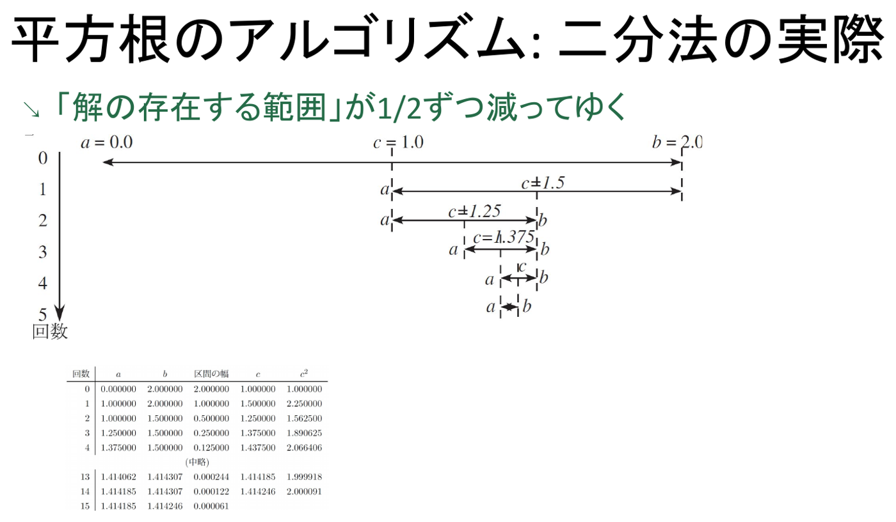
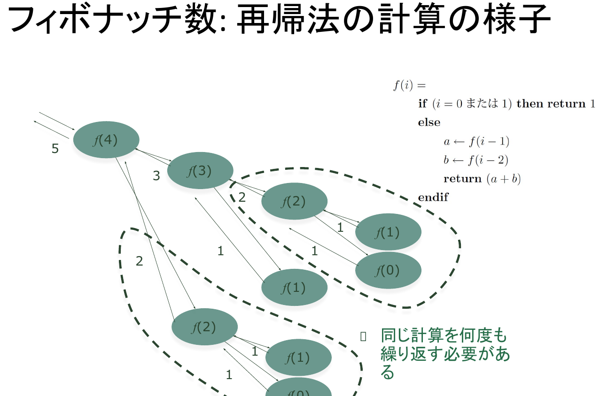
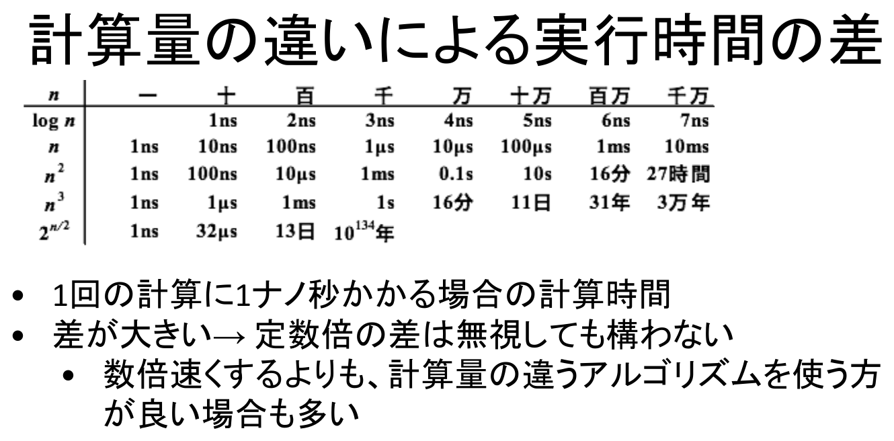

情報｜田中哲郎クラス講義ノート
このページは講義スライドの流れを節単位に組み直し、用語の関係と学習上の要点を説明する。プログラム・アルゴリズム・計算量を中心に、定義だけでなく、なぜ必要か、どのように使うかまで確認する。
本章は、モデル化された問題を実際に"計算"して解く段階を扱う。ここから先の議論は、①計算の手順をどう書き表すか（プログラム・プログラミング言語）、②その手順そのものをどう設計するか（アルゴリズム）、③設計の良し悪しをどう比べるか（計算量）という三つの柱でできている。まず、混同されがちな「プログラム」と「プログラミング言語」を区別することから始める。
プログラム(program)とは、計算を記述したものであり、コンピュータを使った問題解決における活動の単位である。プログラムは一般に、人間が直接読み書きできる形をしていない。そこで、プログラムを人間にも読み書きできる形で記述するために作られた人工の言語がプログラミング言語(programming language)である。プログラミング言語は、プログラムを記述するための約束事をまとめたものであり、人工的に作られた言語（人工言語）であるがゆえに、自然言語と違って曖昧さのない厳密な規則を持つ。
したがって、私たちが日常「プログラムを書く」というとき、実際に書いているのはプログラミング言語によるソースコードであり、それが最終的に計算機が実行できる形へ変換されて、はじめて本来の意味での「プログラム」として動く。この二段階を区別しておくと、「同じプログラム（計算内容）を、違うプログラミング言語で書く」ということが可能である理由も理解しやすくなる。
プログラミング言語が定める約束事は、二つの集まりに分けて考えることができる。ひとつは"内容"の集まりで、これを意味(semantics)と呼ぶ。変数への代入、条件付き処理、反復処理といった基本的な仕組みは、この意味の面から見た要素である。もうひとつは、その内容を表すための"表記法"の集まりで、これを構文(syntax)と呼ぶ。同じ「変数への代入」という意味内容でも、ある言語では「←」、別の言語では「=」や「:=」のように表記が異なることがある。この講義（教科書）では、特定のプログラミング言語の構文に縛られないよう、疑似コード(pseudocode)という共通の書き方で計算を表現する。
疑似コードでは、代入を「←」、条件分岐を「if 条件 then 処理1 else 処理2 end if」、反復を「while 条件 do 処理 end while」、結果の表示を「print(p1,…,pn)」という形で統一して書く。これらの記法は本章全体、さらに以降の章でも繰り返し使われるので、ここで書き方に慣れておく。
疑似コードでは、字下げの深さや位置を変えても計算の意味は変わらない。次の二通りの書き方は、まったく同じ計算を表す。
if x < 3
then y ← 1
else y ← 2
end if
if x < 3 then
y ← 1
else
y ← 2
end if
ただし、これは疑似コードに限った約束であり、実在するプログラミング言語の中には、字下げそのものが構文上の意味を持つものもある（例：Python では字下げのずれがそのままブロックの区切りとして解釈される）。疑似コードでの読みやすさのための字下げと、実行に影響する字下げを混同しないよう注意したい。
「今年の八十八夜（立春から数えて88日目）は何月何日か。ただし今年の立春は2月4日であり、今年は（本当は閏年だが）平年であると仮定する」という問題を材料に、頭の中の素朴な考え方を、計算機に実行させられる厳密な手順へと書き換えていく過程を追う。
まず、日本語のままの考え方はこうなる。2月4日の87日後は2月の日数をはみ出すので、2月の残り日数（28−4=24日）を引く（87−24=63日）。3月63日は3月の日数（31日）を超えるので31日を引く（63−31=32日）。4月32日は4月の日数（30日）を超えるので30日を引く（32−30=2日）。5月2日は5月の日数（31日）に収まるので、最終的な答えは5月2日である。
変数とは、値（例：残り日数）を覚えておく"もの"である。「残り日数」のような文字の列自体は変数名と呼び、変数名と、それが現在保持している値とは区別して考える。変数の値は代入によって変化させることができ、「”変数名” ← ”式”」という形で、右辺の式を計算した結果を左辺の変数へ設定する。
この道具を使って、先ほどの日本語の考え方をより明確に書き直すと次のようになる。<残り日数> = 4 + 87 → 2月91日。91 > 28（2月の日数）なので <残り日数> = 91 − 28（2月の日数） → 3月63日。63 > 31（3月の日数）なので <残り日数> = 63 − 31（3月の日数） → 4月32日。32 > 30（4月の日数）なので <残り日数> = 32 − 30（4月の日数） → 5月2日。2 ≦ 31（5月の日数）なので計算終了。手順が「代入」と「比較」の繰り返しだけで表現できていることに注目したい。
この手順を実際に実行するには、書かれた順番どおりに一つずつ処理を進める必要がある。これを逐次処理(sequential processing)と呼び、記述されている手順を書かれている順番で実行し、同時に2つの処理を行わないことを前提とする。条件付き処理は「if 条件 then 条件が成立した場合に行う処理 else 条件が成立しない場合に行う処理 end if」という形で書く。
先ほどの日本語の手順を、判定のたびに if を入れ子（ネスト）にしてそのまま書き下すと、次のようになる。
<残り日数> ← 4+87
if <残り日数> > 28（2月の日数） then
<残り日数> ← <残り日数> - 28
if <残り日数> > 31（3月の日数） then
<残り日数> ← <残り日数> - 31
if <残り日数> > 30（4月の日数） then
<残り日数> ← <残り日数> - 30
if <残り日数> > 31（5月の日数） then
（6月以降の処理）
else "5月"<残り日数>"日"と表示
end if
else "4月"<残り日数>"日"と表示
end if
else "3月"<残り日数>"日"と表示
end if
else "2月"<残り日数>"日"と表示
end if
6月以降については「（6月以降の処理）」としか書かれておらず、実際に6月以降の計算が必要になったときに正しい答えが求まる保証がない。しかもこの手順を12月まで律儀に書き足そうとすると、if の入れ子がどんどん深くなり、しかも「"m（n月の日数）"を引く」という同じパターンの判定が、月の数だけ何度も繰り返し現れる。同じ構造の処理を条件分岐だけで書き並べるのは、読みにくく、修正もしにくいコードを生む。この繰り返し構造こそが、次に述べる反復処理と配列の必要性を示している。
反復処理は、条件が成立している限り"処理"を繰り返し実行するもので、「while 条件 do "処理" end while」と書く。配列は、要素の集合から"添字"を使って値を取り出し、ひとまとまりの変数として扱えるようにしたものであり、要素全体をまとめて扱うこともできる。例えば「daymonth[2] = 28」という式は、配列名が daymonth、添字が 2、そこに対応する値が 28 であることを表す。各月の日数を daymonth[1], daymonth[2], …, daymonth[12] という配列にあらかじめ格納しておけば、"m（n月の日数）"を毎回個別に書く必要がなくなり、月ごとに枝分かれしていた if の入れ子を、配列を1回だけ参照する反復処理へ置き換えられる。
変数を開始値から終了値まで1ずつ増やしながら繰り返す反復処理は、for構文を使ってさらに簡潔に書ける。「for 変数 from start to end do 繰り返し実行する処理 end for」という形である。例えば、日数が31日の月の数を数える処理は次のように書ける。
count ← 0
for m from 1 to 12 do
if monthdays[m] = 31 then
count ← count + 1
end if
end for
print("日数が31日ある月の数は", count)
配列 monthdays に各月の日数をあらかじめ格納しておけば、月がいくつあっても（1月から12月までであっても、将来もっと多くの単位を扱うことになっても）同じ反復処理の形のまま対応できる。これが、if の入れ子を並べる素朴な書き方に対する反復処理・配列の優位性である。
88夜が5月2日であるのと同じ数え方をしたとき、150夜は何月何日になるか求めよ。
88夜のときと同じ手順を、n=150 として適用する。<残り日数> = 4 + 149 = 153。153 > 28（2月の日数）なので 153 − 28 = 125（3月）。125 > 31（3月の日数）なので 125 − 31 = 94（4月）。94 > 30（4月の日数）なので 94 − 30 = 64（5月）。64 > 31（5月の日数）なので 64 − 31 = 33（6月）。33 > 30（6月の日数）なので 33 − 30 = 3（7月）。3 ≦ 31（7月の日数）なので計算終了。答えは7月3日である。88夜のときと同じ「代入と比較の繰り返し」という手順を、月の数だけそのまま適用できることが確認できる。
一連の処理をひとつの単位としてまとめて定義し、名前をつけて呼び出せるようにしたものを関数という。その関数を呼び出すことで、まとめられた一連の処理を実行できる。関数は次の要素からなる：①名前、②入力となる引数（読み方は「ひきすう」、input1,…,inputn）、③関数の計算内容、④計算の結果を return で返す返り値。呼び出した側では、返された値（返り値）をそのまま自分の計算の中で利用できる。
例として、配列A・start・endを入力とし、A[start], A[start+1], …, A[end] のうち値が最も大きいものを返す関数 findmax を定義する。
function findmax(A, start, end)
m ← A[start]
for i from start+1 to end do
if A[i] > m then
m ← A[i]
end if
end for
return m
end function
変数 m は、それまでに調べた A の要素値のうち最も大きな値を保持し続ける。for ループが A[start+1] から A[end] まで一つずつ調べ、m より大きい要素が見つかるたびに m を更新するので、ループが終わった時点では m は A[start] から A[end] までの最大値になっている。
定義した findmax を使う計算の例を見る。前節の八十八夜問題で使った配列 monthdays（各月の日数）に対して、次のように書ける。
maxdays ← findmax(monthdays, 1, 12)
print(maxdays, "日の月は")
for j from 1 to 12 do
if monthdays[j] = maxdays then
print(j, "月")
end if
end for
findmax(monthdays,1,12) は 31 を返すので、出力は「31 日の月は 1 月 3 月 5 月 7 月 8 月 10 月 12 月」となる。findmax という一つの関数を定義しておけば、最大値を求めるという処理を、日数の配列に限らずどんな配列に対しても、同じ呼び出し方で再利用できる。
既存の関数などを再利用するためにまとめたものをライブラリと呼び、多くのプログラミング言語向けに提供されている。findmax のような基本的な処理も、多くの言語ではあらかじめライブラリとして用意されており、一から書き直す必要がないことが多い。関数として処理をまとめておくこと（モジュール化）は、こうした再利用や、部分ごとの検証（テスト）、全体の見通しの良い分解を可能にする。
アルゴリズムとは、問題解決の手順である。コンピュータで問題を解くときは、次の4段階を踏む。①問題の明確化（モデル化）：目的、入力と出力が何かをはっきりさせる。②問題の解き方（アルゴリズム）を考える。③アルゴリズムを計算機に実行させるために、プログラミング言語でプログラムを作る。④プログラムを実行する。
この4段階を、現実世界の問題からの流れとして見ると、「現実世界の問題」→（人間がモデル化する）→「モデル化された問題」→（人間が考察する）→「アルゴリズム」→（人間がプログラミングする）→「プログラム」→（コンピュータが実行する）→「答え」という一続きの経路になる。ここで注目すべきは役割分担である。モデル化・アルゴリズムの考案・プログラミングという、問題を解くための知的な作業はすべて人間が行い、コンピュータが担うのは最後の「プログラムを実行する」という段階だけである。アルゴリズムを甘く見て「とりあえず動くコードを書けばよい」と考えると、この最初の3段階、とりわけ②のアルゴリズム設計の質が、最終的な性能を大きく左右することを見落としてしまう。
以下の2節では、この2点を具体的な題材で確認する。まず、平方根の計算とフィボナッチ数の計算という、一見すると無関係な2つの問題を取り上げ、それぞれに複数のアルゴリズム（平方根では反復法・二分法・ニュートン・ラフソン法、フィボナッチ数では再帰法・メモ化法）を当てはめて、計算時間がどれほど変わるかを見る。そのうえで、計算量という共通のものさしでこの違いを測り、最後に、辞書検索や最短経路長の計算が、実は同じ「型」（二分探索、再帰・動的計画法）に帰着することを確認する。
正の実数 x が与えられたとき、2乗すると x に近くなる正の実数 y を、精度 δ で求める。つまり、|√x − y| < δ となるような y を1つ求める。小数の計算は有限の精度でしか行えないため、厳密な √x そのものではなく、あくまで近似値しか求められない、という前提をまず確認しておく。
最も素朴な方法は、y = 0 から出発し、y = 0, δ, 2δ, 3δ, … と少しずつ値を増やしながら (y+δ)² が x を超えるかどうかを順に調べ、超えたところの一つ手前の y を解として返すという方法である。
function square_root_iteration(x, δ)
y ← 0
while (y+δ)² ≤ x do
y ← y+δ
end while
return y
end function
y = 0, 1, 2, … と順に検討していく。y = 8 のとき (8+1)² = 81 ≤ 90 なので y ← 9 へ進むが、y = 9 のとき (9+1)² = 100 > 90 となるのでループを抜け、y = 9 を返す。実際 √90 ≈ 9.487 であり、|9.487 − 9| ≈ 0.487 < δ = 1 なので、確かに条件を満たす近似値になっている。
反復法の速さは、繰り返しの回数で比べる。これはプログラムの実行時間のごく大まかな近似にすぎない。実際のコンピュータの性能とは無関係に検討できる一方で、比較・加算といった異なる種類の計算にかかる時間差は無視してしまう、という限界がある。反復法の場合、繰り返しの回数はおよそ √x/δ 回であり、精度を1桁上げる（δ を1/10にする）と、回数もおよそ10倍に増えてしまう。
反復法の弱点は、δ を小さくするほど回数が線形に増えてしまうことにある。そこで、1桁ずつ求めていくという発想に切り替える。例えば2の平方根（=y）を求めるとき、まず0, 1, 2, … と整数の桁で検討すると 1 ≤ y < 2 と分かる。次に 1.0, 1.1, 1.2, … と検討すると 1.4 ≤ y < 1.5、さらに 1.40, 1.41, 1.42, … と検討すると 1.41 ≤ y < 1.42、というように、桁を1つ求めるたびに解の存在する範囲を1/10ずつ狭めていく。これを単純化し、範囲を毎回半分（1/2）に絞り込むようにしたものが二分法である。

二分法では、1回繰り返すごとに解の存在する範囲が1/2になる。したがって n 回繰り返した後の解の存在する範囲は x/2n であり、これが δ 以下になるのに必要な回数は、およそ log2(x/δ) 回である。
反復法では約141億回、二分法では約35回の繰り返しが必要になる。反復法は √x/δ = √2 / 10−10 ≈ 1.4142×1010（約141億）回、二分法は log2(x/δ) = log2(2×1010) = 1 + 10log210 ≈ 1 + 33.2 ≈ 34.2 回、切り上げておよそ35回であり、実際に両者の値が一致することが確かめられる。この桁違いの差から分かるのは、「数倍速いコンピュータに買い替える」よりも「計算量そのものが違うアルゴリズムを選ぶ」方が、はるかに効果が大きい場合が多いということである（この結論は次節「計算量」でさらに一般化する）。
三つ目の方法は、接線を使ってyの値を繰り返し更新していくニュートン・ラフソン法である。
function square_root_rn(x, δ)
y ← x
while (y²-x)/2y > δ do
y ← (y²+x)/2y
end while
return y
end function
y は x から出発し、y ← (y²+x)/(2y) という更新を、誤差の目安である (y²−x)/2y が δ 以下になるまで繰り返す。反復法・二分法が「範囲を絞り込む」という発想だったのに対し、ニュートン・ラフソン法は「現在の近似値から、より良い近似値へ一気に更新する」という発想であり、実際に反復法・二分法よりずっと少ない回数で高い精度に達することが知られている。ただし、この方法の計算量（収束の速さ）は、他の2つの方法のように簡単な式で見積もることが難しいため、本章では立ち入らない。
次の数列の i 番目を求める問題を考える：1, 1, 2, 3, 5, 8, 13, 21, 34, 55, 89, 144, 233, 377, 610, 987, 1597, 2584, …。この数列は直前の2つの数の和になっている（fi = fi−1 + fi−2）ことから、フィボナッチ数列と呼ばれる。数学の教科書ではしばしば F(0)=0, F(1)=1 から始めるが、本講義のスライドでは f(0)=1, f(1)=1 から始める添字の付け方を採用している点に注意する。
関数が自分自身を呼び出す仕組みを再帰という。フィボナッチ数の定義 fi = fi−1 + fi−2 は、まさに「i番目の答えを、それより小さい番目の答えを使って表す」という再帰的な形をしているので、そのまま再帰的な関数として書き下すことができる。
function fib(i)
if i = 0 then
return 1
else if i = 1 then
return 1
else
return fib(i-1) + fib(i-2)
end if
end function
i = 0 または i = 1 のときは、それ以上分解できない基底の値 1 をそのまま返す。それ以外の i では、fib(i−1) と fib(i−2) をそれぞれ求め、その和を返す。定義をそのままプログラムにしただけの、素直な書き方である。

上の呼出し木が示すように、fib(4) を計算する過程で fib(3) と fib(2) を呼び出すが、fib(3) 自身の中でも fib(2) を呼び出しており、同じ引数に対する計算が複数回にわたって重複して行われている。しかも、基底の場合を除けば1回の呼び出しが必ず2つの呼び出しへ枝分かれするため、i が大きくなるにつれて必要な呼び出しの総数は加速度的に（桁違いに）増えていく。定義に忠実であることと、計算が効率よく行えることは、必ずしも両立しない。
同じ計算を繰り返さないために、一度計算した結果を表（テーブル）v に保存しておき、次回以降は保存されている値をそのまま返す手法をメモ化という。
（大きさ i+1 の表 v を用意し、すべての k=0,...,i について v[k] を 0（未計算の印）にしておく）
function fibmemo(i)
if v[i] ≠ 0 then
return v[i]
else
v[i] ← fibmemo(i-1) + fibmemo(i-2)
return v[i]
end if
end function
この表 v は、あらかじめ全ての要素を 0 にしておき、「v[i] ≠ 0 なら計算済み、v[i] = 0 ならまだ計算していない」という判定に使っている。フィボナッチ数は定義よりつねに1以上の値をとり、0 という値そのものが実際のフィボナッチ数として現れることはない。だからこそ、0 を「まだ計算していない」ことを表す番兵の値として安全に流用できる。
fibmemo(i) を呼び出すと、v[i] がまだ0（未計算）であれば fibmemo(i−1) と fibmemo(i−2) を計算してその和を v[i] に保存してから返し、すでに計算済みであれば保存されている v[i] をそのまま返す。これにより、各 i について実際に計算が行われるのは最初の1回だけになり、素朴な再帰で生じていた重複計算が解消される。
この「同じ部分問題を繰り返し解かない」という考え方は、8節で扱う最短経路長の計算、さらに一般には動的計画法と呼ばれる手法の中心をなす発想であり、以降でも繰り返し登場する。
「天気予報の計算に3日かかっては困る」「百年後に答えが出るのでは、解けないのと同じことである」。アルゴリズムが理論上正しくても、現実的な時間で終わらなければ実用にはならない。計算量は、アルゴリズムの計算時間を、コンピュータの性能の違いやプログラムの書き方の細部を無視して、「問題の大きさ」に対するおおまかな見積りとして捉えるための考え方である。
定数倍の違いを無視する理由は、それがコンピュータの性能の違いやプログラムの書き方によってすぐに変わってしまい、アルゴリズムそのものの本質的な比較には役立たないからである。
平方根を精度 δ で求める問題では、x と δ の2つが「問題の大きさ」にあたる。前節の反復法アルゴリズムの計算量は O(√x/δ)、二分法アルゴリズムの計算量は O(log(x/δ)) と表せる（ニュートン・ラフソン法の計算量は見積りが難しいため省略する）。前節で見た「x=2, δ=10−10 のとき反復法は約141億回、二分法は約35回」という桁違いの差は、まさにこの O(√x/δ) と O(log(x/δ)) というオーダーの違いから生じているものである。

O(1)（入力の大きさによらず一定）、O(log n)、O(n)、O(n log n)、O(n²) のように、n に対する増え方の速さが異なるオーダーが並ぶ。1回の演算にかかる時間が同じであっても、オーダーの違いによって実際の計算時間の差は非常に大きくなる。数倍速いコンピュータに買い替えるよりも、計算量のオーダーそのものが小さいアルゴリズムを選ぶ方が効果的な場合が多い、というのが本節の要点である。前節で見た素朴な再帰によるフィボナッチ数の計算は、基底の場合を除いて1回の呼び出しが必ず2つの呼び出しへ枝分かれする構造をしているため、O(n) や O(n²) のような多項式のオーダーには収まらず、i の増加とともに爆発的に（指数関数的に）増加するオーダーになってしまう。これに対しメモ化を使った版は、各 i について計算が一度しか行われないため、オーダーは O(n) に抑えられる。同じ問題を解くにもかかわらず、アルゴリズムの選び方だけで「入力が多少増えても現実的な時間で終わる」か「入力が少し増えただけで手に負えなくなる」かが分かれる、というのが、この章を通じて繰り返し示されているメッセージである。
新しい問題に出会うたびにゼロから考えるのではなく、過去に有効だとわかっているアルゴリズムの「型」を適切に選んで当てはめること、これをアルゴリズム戦略という。代表的な共通アルゴリズムとして、二分探索法（→辞書検索）、再帰法・動的計画法（→最短経路長問題）の2つを見る。
N個の単語がアルファベット順に収録されている辞書があり、単語はアルファベット順に0番目、1番目、…、N−1番目と番号づけられ、i番目を指定すると単語 wi がわかるとする。与えられた単語 w が何番目に収録されているかを見つけ出したい。
function dictionary_binary_search(w, dict, N)
a ← 0
b ← N-1
while a ≤ b do
c ← (a+b)/2 の整数部分
if w = dict[c] then
return c
else if w が dict[c] より前の語 then
b ← c-1
else
a ← c+1
end if
end while
print(w, "は収録されていなかった")
return -1
end function
a, b で「解（探している単語）が存在しうる範囲」を管理し、その中央 c を見る。w が dict[c] と一致すれば c を返して終了する。w が dict[c] より前の語なら、範囲の後ろ半分は探索する必要がないので b ← c−1 として捨て、逆に後の語なら a ← c+1 として前半分を捨てる。この操作を、範囲が空になる（a > b になる）まで繰り返し、空になったら見つからなかったとして −1 を返す。1回ごとに探索範囲がほぼ半分になるので、線形に w0 から順に調べる場合に比べて、必要な比較の回数は N ではなく log2N のオーダーになる。
R ← 解の存在する範囲 while まだ解は不明で範囲 R は残されている do R を2つの範囲 R1, R2 に分割する 解が R1 に含まれる場合は R ← R1 解が R2 に含まれる場合は R ← R2 end while
辞書検索だけでなく、5節で見た「平方根を二分法で求める」計算も、実はまったく同じ戦略の一例である。両者とも「解の存在する範囲を、毎回半分に絞り込んでいく」という点で、表面上はまったく異なる問題でありながら同一の型に帰着している。これが、4節で述べた「アルゴリズムは類型化されている」ことの具体例である。
各枝に重み（距離など）のついた有向グラフがあり、出発点から終点までの経路のうち、通った枝の重みの合計が最小になるものを求める。ここでの鍵になる関係は、ある点 v からの最短経路長を求めるには、v から1つ進んだ先の点からの最短経路長さえわかっていればよい、という点である。
（w[vi,vj] は点viから点vjへの直接の距離、min は最小値を返す関数とする）
function d(v)
if v = 終点(vG) then
return 0
else
{vから直接移動できる点をv1,v2,...,vkとして}
return min(d(v1)+w[v,v1], ..., d(vk)+w[v,vk])
end if
end function
v が終点そのものなら、そこから終点までの距離は0である。そうでなければ、v から直接移動できる点 v1,…,vk それぞれについて「そこまでの距離 w[v,vi]」と「そこから終点までの最短経路長 d(vi)」を足し合わせ、その最小値を d(v) とする。フィボナッチ数の fi = fi−1 + fi−2 と同じように、d(v) を、より終点に近い点での d(・) を使って再帰的に定義している。
フィボナッチ数の素朴な再帰と同様、グラフの分岐の仕方によっては、同じ点 v に対する d(v) の計算が、複数の経路から重複して呼び出されることがある。特にグラフが複雑になるほど、この重複は無視できなくなる。
（グラフ上の各点から終点までの経路長を覚えておく、空の表 m を用意する）
function dm(v)
if m[v] ≥ 0 then
return m[v]
else
{vから直接移動できる点をv1,v2,...,vkとして}
m[v] ← min(d(v1)+w[v,v1], ..., d(vk)+w[v,vk])
return m[v]
end if
end function
フィボナッチ数のメモ化も、最短経路長のメモ化も、考え方はまったく同じである。大きな問題を、より小さな部分問題（フィボナッチ数なら小さい添字の値、最短経路長なら終点に近い点からの経路長）に再帰的に分解し、それぞれの部分問題の答えを表に保存しながら、同じ部分問題を二度と計算し直さないようにする。この共通の考え方を動的計画法と呼ぶ。「再帰的に定義できる」ことと「部分問題が重複して現れる」ことの両方が揃う問題では、動的計画法（メモ化）によって、素朴な再帰よりも計算量を大幅に削減できることが多い。
用語を単独で暗記するのでなく、題材のどこにその概念が現れ、どの条件を根拠に判断するかを説明できるようにする。
プログラム・アルゴリズム・計算量は独立した暗記事項ではなく、情報を表現し、処理し、伝え、社会で安全に利用するための一連の考え方としてつながっている。各節の太字語を自分の言葉で説明できるか確認しよう。